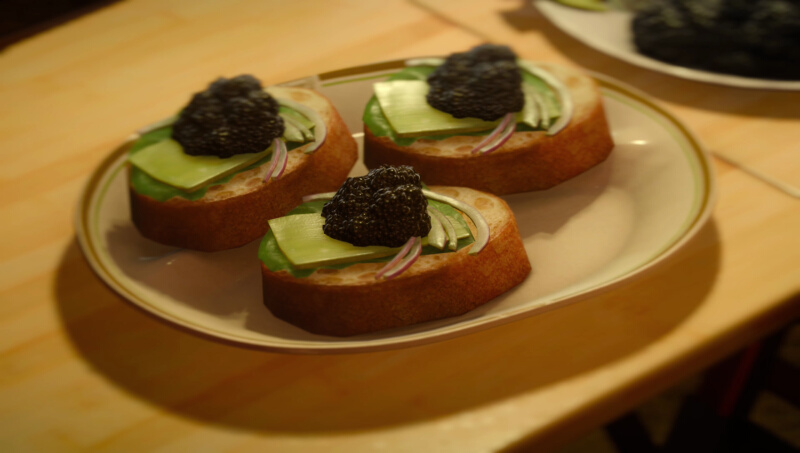

Home
Royal Banquet Canapé
Active cooking time: 15-20 mins | Total cooking time: 15-20 mins | Serves at least 3

By using lumpfish caviar as opposed to a more expensive kind, you'll
be able to avoid having to take on endless hunts just to afford this
fancy French-Altissian dish!
Ingredients
- 1 jar lumpfish (or other) caviar
- 1 baguette
- lettuce
- 1 leek
- 1 red onion
How to
- Cut the baguette to the desired thickness, about 1 inch (2.5cm).
Brown the baguette slices under a grill or in a toaster. Be careful
not to burn the edges. Each baguette slice forms the base of one
canapé.
- Wash, dry, and then tear the lettuce leaves into the desired shape.
Cover the toasted baguette slices with the lettuce leaves.
- Cut the leek and separate them into thin slices. Blanch the slices to
soften them and mellow the flavor. Flatten the slices out after you
fish them out from the water and place one slice top of each
canapé.
- Slice one half of the onion, as thinly as possible. Place about three
onion half-rings onto each canapé.
- Scoop some caviar from the jar, and using either the back of
another spoon or your pinky finger, slide the caviar carefully onto a
canapé. Try to keep the caviar piled, and don't spread it around.
Repeat for all canapés.
- Serve!
Effect(s)
Strength/Magic +75, EXP +50%
Source